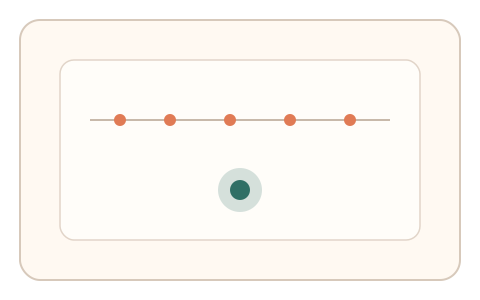
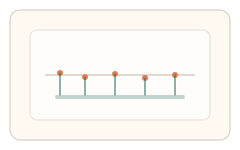

#4
生物肌肉与鼠标运动
已扩展
节律—误差双条件
要求用户跟随节拍完成点击/拖拽，同时利用自然误差作为“人类证据”。
概念原文
让用户完成一组节律性点击/拖拽（节奏由轻量提示引导），通过“节律相对稳定 + 微误差自然存在”作为通过条件。机器人若节律过于精准或误差过小会被判为异常。
使用“适度不精确”作为人类证据，逆向利用机器的过度完美。
研究背景
人类在节律任务中会表现出可预测的时间判断与微误差分布，节拍稳定但不完美。将“节律稳定 + 适度误差”作为双条件，可避免脚本过度精准带来的伪造。
核心机制
- 以视觉或轻量提示引导节拍，形成短序列任务。
- 记录节拍间隔、提前/滞后误差与漂移趋势。
- 判定强调“稳定但不完美”的时间分布。
- 可在 2–3 轮节拍中检查一致性。
用户流程
- 步骤 1：用户看到节拍提示与点击目标。
- 步骤 2：用户跟随节拍完成 4–6 次点击。
- 步骤 3：系统分析节律序列与误差分布。
判定信号
相邻节拍间隔（ITI）与漂移趋势
人类节律呈稳定但缓慢漂移的特征。
提前/滞后误差分布
真实用户会出现微小偏差而非完美对齐。
判定逻辑
设置节律稳定阈值与误差窗口，要求“稳定度达到阈值且误差不为零”；过度精准或过度随机均判异常。
对抗面
- 脚本注入固定抖动以模拟误差
- 通过预测节拍提前触发点击
防御与缓解
- 随机节拍起始相位与间隔，减少可预测性
- 加入微弱节拍变化，检测适应曲线
- 结合轨迹微波动与反应时作为辅助信号
可达性与风险
提供纯视觉提示以替代声音，支持更慢节拍模式并允许放宽误差窗口。
- 听觉障碍或注意力负担可能导致误拒
- 高延迟设备影响节拍精度
可视化状态

状态 1：节拍提示
以视觉脉冲提示节奏，显示点击目标。

状态 2：节律点击
用户跟随节拍完成点击序列。

状态 3：误差窗口判定
基于节拍稳定度与误差分布判定。
参考资料
Time perception
说明人类对时间与节律的感知特性。
Reaction time
说明反应时分布与时间判断的基本特征。